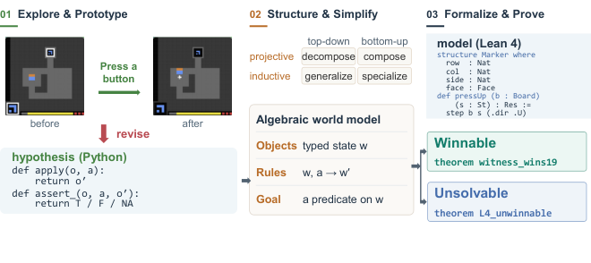
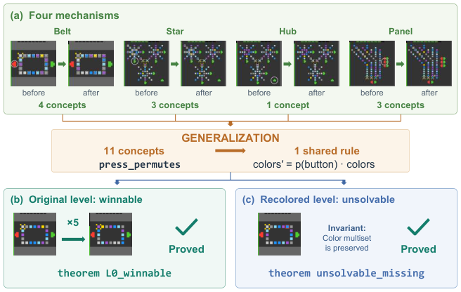
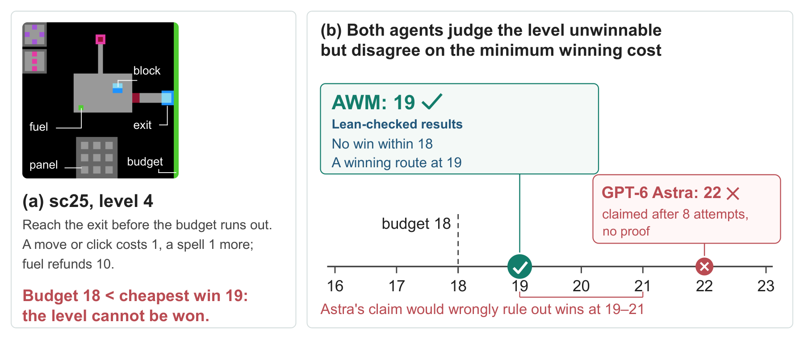

LLM agent formalizes learned game world models in Lean 4, replaying winning trajectories and proving reachability and impossibility with kernel-checked proofs.
Abstract
AI has made remarkable progress in mathematics, solving challenging problems with machine-checkable proofs in Lean, yet typically relying on predefined mathematical definitions and formal specifications. This raises a natural question: can it reason rigorously about an unknown world? We introduce the Algebraic World Model (AWM), a framework that turns interaction with unfamiliar environments into explicit mathematical models supporting formal reasoning. AWM explores the environment and develops executable Python hypotheses, continually testing and revising them against observations. It then structures these hypotheses into typed objects and shared rules, simplifies their structure through category-theory-guided transformations, and formalizes the resulting model in Lean 4 to prove reachability and impossibility. AWM can formally prove that a goal is unreachable, even beyond explored trajectories. On two impossible game levels, it constructs closed, kernel-checked Lean proofs excluding every legal winning sequence in all six runs, while Claude Opus 5.5 and GPT-6 Astra, equipped with coding tools, produce none in twelve baseline runs. Four of AWM's six initial bounds are correct, compared with one for Opus 5.5 and none for GPT-6 Astra; given only feedback that a cheaper win exists, AWM revises its rules and constructs new proofs, reaching six of six correct bounds. Moreover, AWM produces interpretable mathematical models whose rules can be inspected and tested step by step. Across all 25 public ARC-AGI-3 games, these models enable Lean to replay the winning trajectories of all 183 levels and generalize beyond observed play, predicting unseen transitions and detecting changes in game mechanics. With Claude Opus 5, AWM clears all levels with a score of 99.9, while its certified winning trajectories use only 43% of the human baseline's actions.
Problem
AI systems produce machine-checked proofs in Lean, but typically from predefined definitions and formal specifications. The question addressed is whether an agent can learn the rules of an unfamiliar environment and then reason rigorously about it, including proving that a goal is unreachable.
Approach
The Algebraic World Model (AWM) has three stages. First, it explores the environment and maintains executable Python hypotheses, testing them against observed transitions. Second, it organizes these hypotheses into typed objects and shared rules, simplifying them through category-theory-guided transformations checked in Lean via projective and inductive limits. Third, it formalizes the model in Lean 4 and proves reachability using winning witnesses, and impossibility using invariants or cost lower bounds.

Figure 1: AWM’s three-stage pipeline: interactive exploration builds a provisional executable model, algebraic transformations reveal and simplify its structure, and Lean 4 formalization enables certified proofs of reachability or impossibility.

Figure 3: From shared structure to formal proofs in lp85 . (a) Eleven concepts describing four button mechanisms are generalized into a shared permutation rule. Each before/after pair shows a recorded press, with the pressed button circled and changed tiles outlined. (b) A five-click sequence witnesses reachability. (c) Recoloring the only yellow tile makes the goal unreachable, since every press
Results
On all 25 public ARC-AGI-3 games (183 levels), Lean replays every winning trajectory, using 220 formalized rules and 1,374 theorems with only standard axioms. With Claude Opus 5, AWM scores 99.9 using 43% of the human baseline's actions. On two sealed impossible sc25 levels, AWM produces kernel-checked impossibility proofs in all six runs, while baselines produce none in twelve runs. AWM's bounds become 6 of 6 correct after feedback.

Figure 4: Sealed sc25 level 4. AWM proves in Lean that the minimum winning cost under its learned model is 19, one unit above the budget, and verifies a route at that cost; GPT-6 Astra claims 22 without a proof.
System
Code
Mean score
Games at 100
Actions / human
Claude Opus 5
no
40.7
5
—
GPT-6 Astra
no
68.3
10
—
Rodionov (2026a)
yes
99.0
23
0.49
Memento 3
yes
100.0
25
0.44
AWM (ours)
yes
99.9
23
0.43
Official scores on 25 public ARC-AGI-3 games (subset)